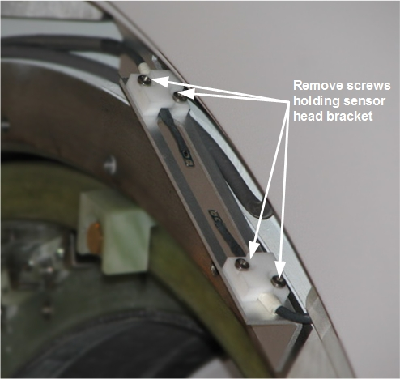

| NOTE: | Make sure the air flow sensors are all the way behind the front end bell but not touching the magnet ring. To adjust, move the bracket down until the bracket touches the magnet ring, and then move it up 1/16 inch (2 mm). |
Illustration 4: Removing the Air Flow Sensors
